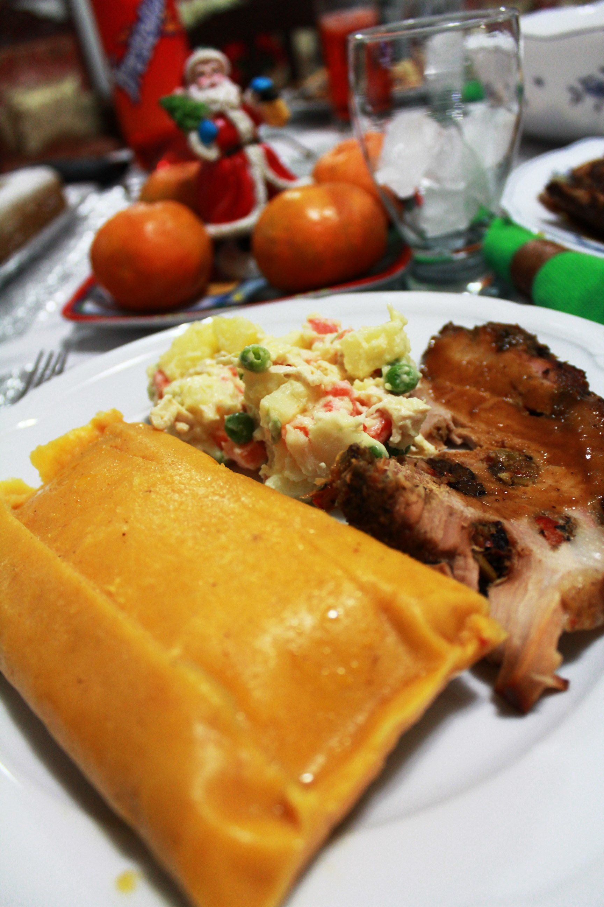

Hallaca
22/12/2018 - Caracas 
Uno de los platos mas reconocidos y elaborados que se presenta en la gastronomía venezolana es sin lugar a dudas la hallaca. Esta obra maestra de nuestra culinaria es el más tradicional de los platos que engalanan las festividades navideñas en nuestra Venezuela.
La hallaca es el resultado del proceso histórico que ha vivido nuestra sociedad.
Desde su cubierta de hojas de plátano hasta los detalles que adornan y componen su guiso, pasando por su ingrediente primordial, la masa de maíz coloreada con onoto, la hallaca es la expresión más visible del mestizaje del venezolano. Cada ingrediente tiene sus raíces: la hoja de plátano, usada tanto por el negro africano como por el indio americano, es el maravilloso envoltorio que la cobija; al descubrirla, traemos al presente nuestro pasado indígena, pues la masa de maíz coloreada con onoto es la que nos recibe con su esplendoroso color amarillo; luego, en su interior se deja apreciar la llegada de los españoles a estas tierras, carnes de gallina, cerdo y res, aceitunas, alcaparras, pasas... todo picado finamente, guisados y maravillosamente distribuidos se hacen parte de un manjar exquisito. Sus ingredientes, todos partes de diferentes raíces se complementan armoniosamente en la hallaca, expresión del mestizaje y colorido del que es parte nuestro pueblo.
La palabra "Hallaca" proviene del guaraní y deriva de la palabra "ayúa" ó "ayuar" que significa mezclar o revolver, de estas palabras se presume que "ayuaca" sea una cosa mezclada, que por deformación lingüística paso a llamarse "ayaca". Otra versión presume que la palabra procede de alguna lengua aborigen del occidente del país, cuyo significado es "envoltorio" ó "bojote".
Sea cual sea el origen de esta palabra, sabemos que "la hallaca" es completamente venezolana, tanto por su nombre como por su confección y es orgullo de nuestra cocina, pues ella sin distinciones sociales se presenta espléndida en la mesa navideña de todos los venezolanos, aportando un toque de maravilloso gusto y sabor a nuestra navidad.